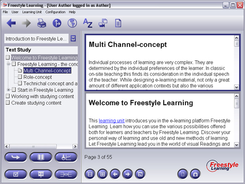

In some cases, you may consider it useful to view at two element's content at the same time. Therefore click the Split Screen Buttons in the Interaction Panel. The Content Panel will be divided into two panels, filled with the same content after initiating Split Screen Mode. One Panel is surrounded by a blue border, indicating it as the Primary Element Content Panel. The other one gets grey bordered to indicate it as the Secondary Element Content Panel. Which elements are related to the presented contents is also shown by the colored selections in the Structure Tree. When you select any element from the Structure Tree during Split Screen Mode, the Primary Element Content will change according to your selection whereas the Secondary Element Content remains fixed.

To switch between Primary and Secondary Content Panel, press the Switch Panels button from the Interaction Panel. You can watch the colored borders changing, and further selections from the Structure Tree will display the selected content in the former Secondary, but now blue bordered Primary Content Panel. You can use the Switch Panels button as many times as you like to.
Back to Main Help Page